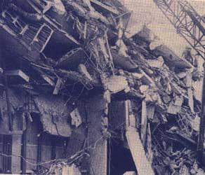
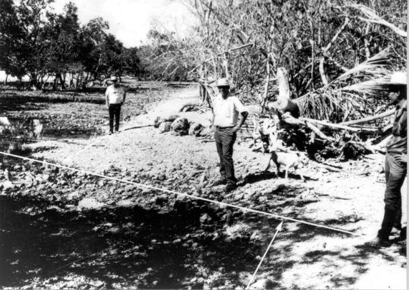
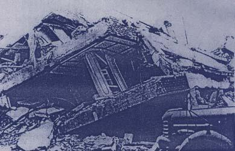
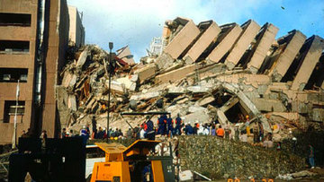

Over the years, the Philippines has suffered a history of destructive and frequent earthquakes. Destruction of buildings and the loss of lives are not limited to the epicenter and nearby cities of the earthquake.
1968

On Aug. 2, 1968, an earthquake, felt at Intensity 8, had its epicenter in Casiguran, Aurora. But it was felt as far as Manila, where 270 people were killed and 261 others were hurt mostly due to the collapse of the Ruby Tower in the Binondo district.
1970s

On Mar. 17, 1973, the municipality of Calauag in Quezon province was the worst hit by a 7.0-magnitude earthquake that struck Ragay Gulf. At least 98 houses were totally destroyed and 270 others were partially damaged. In Brgy. Sumulong in the same town, 70 percent of the school buildings were damaged.
A 7.9-magnitude earthquake on Aug. 17, 1976 left more than 5,000 dead; 2,288 missing; and 9,928 injured in Regions IX and XII. The tremor happened just after midnight when most people were sleeping. A tsunami that devastated more than 700 km of coastline, struck from different directions, catching residents in the area unaware.
1980s

On Aug. 17, 1983, a 6.5-magnitude, Intensity 7 earthquake was felt in Laoag City and the municipality of Pasuquin in Ilocos Norte. A number of reinforced concrete buildings either totally crumbled or sustained major structural damage beyond rehabilitation. The most heavily damaged structures in Laoag City are those near the Laoag River flood plain and along reclaimed stream channels.
1990s

On Feb. 8, 1990, a 6.8-magnitude earthquake, which was felt at Intensity 8, hit the municipalities of Jagna, Duero and Guindulman in Bohol. About 3,000 houses, buildings and churches were damaged, of which 182 totally collapsed, including two historical churches.
The bridge connecting Jagna and Duero also collapsed while the roads to the municipality of Anda sustained cracks and fissuring. Landslides and rockfalls blocked portions of the roads that caused inaccessibility to some areas between Anda and Garcia Hernandez. Six fatalities were reported and more than 200 were injured. About 46,000 people were displaced and at least 7,000 of them were rendered homeless. Damages to property was estimated to reach P154 million.
The 7.7-magnitude earthquake on July 16, 1990 shook the northern part of Luzon. Caused by strikes and slips in the Digdig Fault and with an epicenter in Nueva Ecija province, the earthquake devastated Baguio City, which was 50 km away.
Damage to buildings, infrastructure and property, mostly in Dagupan City and Baguio City, amounted to roughly P10 billion. At least 1,621 were killed. The 1990 earthquake prompted the Philippine Institute of Volcanology and Seismology to develop a software for Rapid Earthquake Damage Assessment System.
On Nov. 15, 1994, a 7.1-magnitude earthquake affected 13 municipalities or a total of 273 barangays in Oriental Mindoro. About 22,452 families were affected, 78 people were killed and 430 were injured.
Damaged infrastructure include 24 bridges, eight of which were rendered impassable for days, isolating villages and towns. Three major power plants, two of which are connected to the Luzon grid and one to the Visayas grid, tripped during the earthquake, causing brownouts in Mindoro Island and parts of Leyte and Samar.